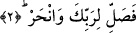

onlara açılmaz. Onlardan biri ölür gider de ihtiyâcını giderme duygusu hâlâ
gönlünde çalkalanır durur. Bunlar, Allah’a yemîn etseler Allah onların sözünü yalan
çıkarmaz.” [237]
Rivâyete göre İbn Abbâs (r.a.), Kevser’i “bol hayır” diye tefsir etmişti. Saîd b.
Cübeyr, “İnsanlar onun Cennette bir nehir olduğunu söylüyorlar?” dedi. İbn Abbâs da:
“O da bol hayra dâhildir” cevâbını verdi.[238]
Hz. Âişe der ki: “Her kim Kevser’in akış sesini işitmek isterse iki parmağını kulağına
tıkayıp dinlesin!” [239]
Atâ (r.a.), “Burada bahsedilen Kevser, Rasûlullah (s.a.) Efendimiz’in havuzudur.
Yanına gelecek kimselerin çok olması sebebiyle bu ismi almıştır” der.
Bir hadîste şöyle geçer: “Benim Havzım, San’â ile Eyle arasındaki mesâfe kadardır.
Köşelerinden birinde Ebû Bekir, ikincisinde Ömer, üçüncüsünde Osman ve
dördüncüsünde Ali bulunacaktır. Bu dört sahâbeden birisine buğzedene, diğeri
havuzdan su vermeyecektir.” [240] Bu havuz mahşerdedir.
Zâhir olan görüşe göre Allah Teâlâ’nın görünen ve görünmeyen tüm nîmetleri bu
Kevser’e dâhildir. Zâhiri nîmetler arasında dünya ve âhiret hayırları vardır. Bâtınî
nîmetlerden birisi ise, ledünnî ilimlerdir. Ledünnî ilimler, zâhirî ve bâtınî güçler
vâsıtası ile iktisâb edilmeksizin feyz-i ilâhî ile hâsıl olur.
Te’vîlât sâhibi buyurmuştur ki; Kevser, vahdette kesretin mârifetidir. Şühûd, kesrette
vahdeti müşâhededir. Bu, mârifet bağında bir nehirdir, kim ondan içip doyarsa artık
ebediyyen cehâlet susuzluğundan emîn olur. Bu mânâ Hazret-i Risâlet (s.a.) ve onun
ümmetinin kâmil velîlerine hastır.
2. Şimdi sen Rabbin için namaz kıl ve kurban kes!
Rabbin için kurban kes! Bu âyetteki “fâ” harfi, tertîb ifâde eder, öncesiyle sonrası
arasında bir sıralama olduğunu gösterir. Çünkü Allah Teâlâ’nın Nebî (s.a.)’e, âlemlerde
daha önce hiçkimseye vermediği, bundan sonra da vermeyeceği yukarıda zikredilen
ihsân ve ikrâmları, bu âyette emredilen fiilleri yapmayı gerektirir.
Nahr; devenin boynunu gövdesine bitişen yerinden kesmektir. Zebh ise koyun ve sığır
gibi hayvanları boynun başa bitişen yerinden kesmektir.
Buna göre mânâ şöyle olur: Hiçbir nîmetin denk olmadığı bu büyük nîmeti sana
lûtfeden Rabbine, sırf O’nun rızâsı için; şükrünü edâ etmek üzere namaz kılmaya devâm
et! Namazdan gaflet içinde olan ve onu kılarken gösteriş yapanlar gibi olma! “Sırf
O’nun rızâsı için” anlamı “li-Rabbike” ifâdesinin başındaki “lam” harf-i cerri’nden
anlaşılıyor. Namaz şükrün bütün kısımlarını bünyesinde toplayan bir ibâdettir. Şükür üç